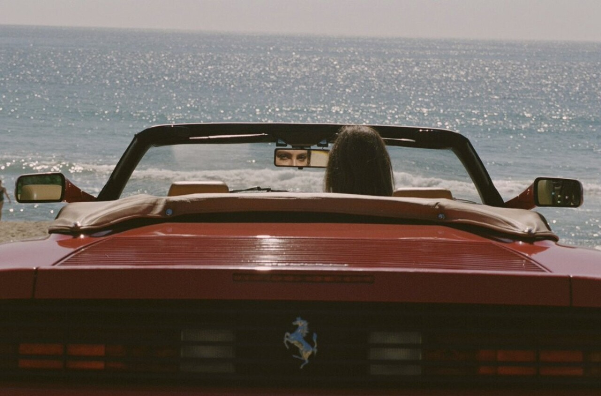

 Хенрик Пурьенн направляет объектив за пределы реальной жизни, в сторону фантазий о красивых девушках, пляжной неге и бесконечном лете. Зачастую его творчество напоминает Playboy 1970-х. Искрящиеся ретро эстетикой фотографии Пурьенна полны соблазна, романтики и чувственности. Он известен тем, что фотографирует девушек в непринуждённой обстановке на плёнку. Пурьенн снимает глазами поклонника и вуайериста, но его сцены не смущают зрителя, а скорее вызывают желание больше узнать о героинях. Каждая фотография кажется совершенно естественной и простой, а из скопления снимков образуются серии, напоминающие фрагменты из культового фильма с обласканной солнцем, возможно, воображаемой эпохой. Хенрик Пурьенн (Henrik Purienne) родился и вырос в Вустере, Южная Африка. Его всегда интересовали архитектура и дизайн, но учился он на режиссёра и около 10 лет проработал на телевидении, снимая документальные фильмы. Фотограф характеризует свою работу как пожизненную одержимость визуальным совершенством. Он не организовывает декорации, а живёт так, чтобы создавать вокруг себя среду, стиль которой достоверно передавал бы его видение. Музы фотографа – исключительно природной красоты дивы с незаметным макияжем. «То, как я живу – результат того, что я называю синдром эстетической раздражительности, – рассказывает Пурьенн. – Он немного похож на ОКР, но мотивируется эстетическими соображениями. В общем, из-за эмоциональной реакции на объекты и на людей у меня потребность в очень эстетически приятном месте, чтобы функционировать. Это не означает, что я слишком критичен или что хочу быть таким. Просто моё окружение действительно влияет на моё настроение и работу мозга. Синдром довольно новый, но всё в моём доме – его следствие. У меня очень специфический вкус, и я точно знаю, что мне нравится – от зубной щётки до гардероба. И куда бы я ни пошёл, стараюсь сохранять очень похожее пространство, похожую атмосферу. Это своего рода случайный, но прекрасный хаос». Он увековечил свою эстетику в книгах «Purienne» (2013), «Holiday» (2016) и «Jeux de Peau» (2019). Последняя названа в честь калифорнийской резиденции на Голливудских холмах, где были сняты фотографии, и создаёт впечатление визуального дневника праздного времяпрепровождения красивых людей. Ещё одно издание Пурьенна вышло в сотрудничестве с Saint Laurent. Это эксклюзивный альбом с чёрно-белыми снимками моделей в нарядах из коллекции Энтони Ваккарелло – перья, муслин и кружева в интерьерах парижских квартир. Публикации Пурьенна практически сразу стали коллекционными. Эксперты делают аналогичные прогнозы относительно дальнейших работ автора. Пурьенн говорит, что много снимает не только про «девушек у бассейна». Возможно, через 10-20 лет он представит книгу о ночной жизни, рейвах или других своих интересах. «Но что бы я ни снимал, процесс более или менее одинаков: сюжеты, которые я запечатлеваю, действительно происходят. Я никогда не говорил, как позировать и что делать. Всё протекает довольно естественно». О его творчестве иногда говорят, что в нём блестяще перемешались кино французской новой волны со стилистикой Слима Ааронса и Хельмута Ньютона. На что Пурьенн отвечает: «Честно говоря, пока я не начал снимать, все мои познания о фотографии исходили со страниц i-D, The Face, Purple и Self Service. Они были моей библией. Я мало что знал о конкретных фотографах, всегда фотографировал только своих подруг и свой мир. Как и во всём: чем более личное, тем более универсальное». Приоткрыть для себя мир, созданный фотографом, можно, просмотрев его работы в альбоме ниже. Новыми публикациями Хенрик Пурьенн делится на сайте и в Instagram.

Хенрик Пурьенн: о красивых девушках и бесконечном лете
Антон Тотымачев
28 мая 2022
Спасибо за данную статью! У автора определенно есть крутой стиль написания.